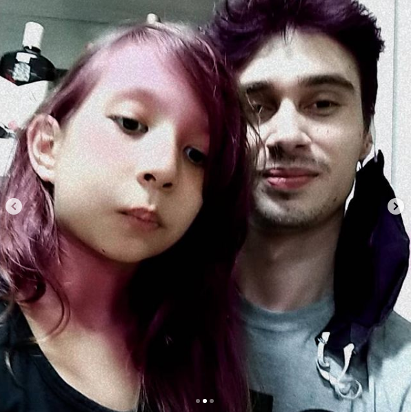

Apresentação
Muito prazer, me chamo Guilherme, sou nascido, criado e residente em Foz do Iguaçu-PR, atualmente com 28 anos.
Sou formado em matemática pela UNIOESTE e mestre em bioestatística pela UEM. Programação sempre foi algo que tive vontade de aprender e me aprofundar, durante a infância algo muito pesquisado e visado.
Pude utilizar durante a graduação mas de maneira muito simples, apenas para implementação de funções e métodos matemáticos já no mestrado a programação se tornou algo essencial e simplesmente sensacional e me aprontar se tornou paixão.
Paternidade

Durante a Faculdade tive a felicidade de me tornar pai, o que para muitos pode parecer uma complicação ou dificuldade, foi me serviu de “boost” por assim dizer, existia um Guilherme e outro após esse fato, me fez mudar de mentalidade e amadurecer muito com relação aos estudo e a possíveis futuros.
Minha filha se chama Sarah, atualmente com 7 anos, e é simplesmente gratificante poder ter aquela mini pessoa crescendo e se formando.
Sempre tive a paixão por ensinar então ter alguém para acompanhar desde o nascimento podendo orientar e possibilitar visões de mundo e qualidade de vida que a mim não existiam é simplesmente fascinante.
Projetos
No geral como minha principal fonte de renda tenho uma linha própria de chopp para delivery chamda Heikel, o que anda muito bem mesmo com o advento da pandemia (os bares pararam mas a vontade de beber do povo não).
Continuo aplicando aquilo que fui qualificado durante a formação e estou lecionando de maneira particular para um número de alunos, gosto e não pretendo parar a menos q o motivo seja muito justo.
Estou no processo de abertura de uma marca de roupas com foque em streetwear chamada Barthom com confecção própria. Notei uma grande falta nas opções nacionais e a possibilidade veio se tornando cada vez mais viável, no mais tardar até novembro estaremos operante.
A seguir algumas metas e pensamentos referente a cada projeto.
-
Heikel ®
- Chopp pilsen premium;
- Máquinas gelando em menos de 30 segundos;
- Entrega garantida;
- Chopp extra consignado;
-
Barthom ®
- Qualidade textil;
- Exclusividade;
- Bom atendimento;
- Confiança.
Agradecimentos
Bom, meu muito obrigado a Kenzie Academy pela oportunidade, não será desperdiçada, pretendo tirar um grande proveito do curso e das oportunidades que serão apresentadas.
Agradeço a minha família pela colaboração e compreensão dos objetivos e vontades que tenho, bem como todo o apoio empregado.
Agradeço a você que aguentou ler até aqui, foi um prazer me apresentar, que seu dia seja maravilhoso e produtivo.